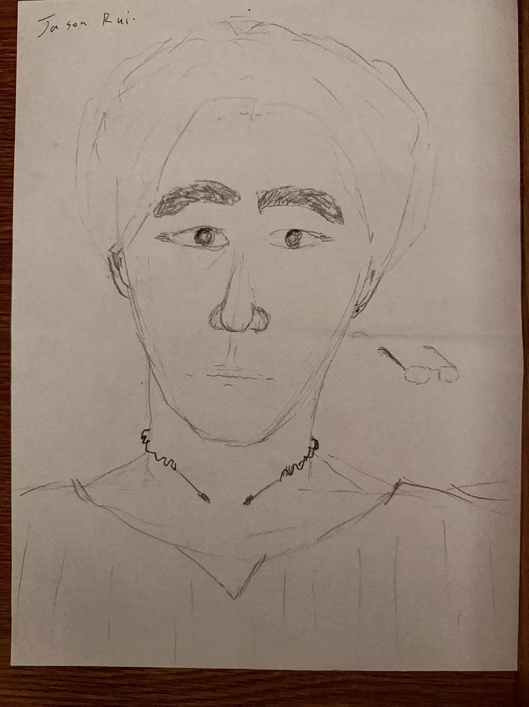

5 MINUTES
OF FAME
A reflection on emotion, time, power, surveillance, and self-observation.
The Lag
Communication speed is now a social norm. I don’t always reply immediately, and neither do others.
But our emotions do not always move at the pace of a fiber-optic cable.

Changing Form
I began to notice that intimacy hasn't disappeared; it has simply transitioned through a new medium. The feeling remains, but the vessel has changed.
Power of Time
Time is not neutral.
The speed of a reply is a hierarchy. Some people can wait. Others cannot.
The Internal Gaze
Power doesn't just watch from the outside.
It teaches you to watch yourself — to check your appearance, to adjust how you present, to imagine how others might see you.
Persistence
Observe the observer.
I am both the one who looks, and the one being looked at.
I have always been aware of how I look. This self-portrait is not a discovery, but a continuation.
I still see myself clearly — and I choose to keep looking.

Awareness is the destination.
Knowing these structures exist does not mean I have to escape them.
It means I understand them — and still choose to live within them.